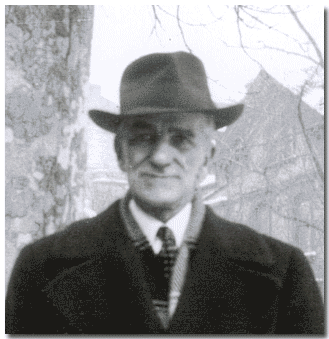
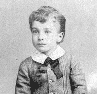
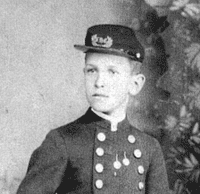
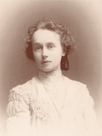
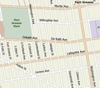

|
 |
|
Robert B. Henderson Sr.Robert B. Henderson was the grandchild of Captain Joseph Henderson. He married Lillian E. Castell and had one child, Robert B. Henderson Jr. |
|
| Important Facts | |
| July 25, 1879 | Robert B. Henderson Sr. was born in New York. He is the grandson of Captain Joseph Henderson and son to Joseph Henderson Jr. and Mary E. Duryea. Source: 1880 US Federal Census for Jersey City, Hudson, New Jersey. |
 Lacey, Morristown, NJ |
| June 15, 1880 | The 1880 U.S. Census lists Joseph Henderson (28), Mary (25), Joseph (4), Robert (2). Joseph was listed as clerk and his father from Charleston, SC. They were living on 32 West Side Avenue, Jersey City, New Jersey. Source: 1880 US Federal Census for Jersey City, Hudson, New Jersey; Roll: T9_783; Family History Film: 1254783; Page: 116.2000; Enumeration District: 24; Image: 0502. | |
| 1889-1890 | Joseph Henderson's family was listed in the Jersey City, New Jersey Directories, 1889-90 as living at 618 Bramhall Avenue, Jersey City, New Jersey. Source: Jersey City, New Jersey Directories, 1889-90. |
 Strunk, Penn St., Reading, PA |
| 1890 | US Census - no census records found for Robert B. Henderson in New York or New Jersey. | |
| January 21, 1900 | At age 21, Robert B. Henderson married Lilly E. Castell in Port Richmond, N.Y. Source: New York State Marriage Certificate. | |
| May 9, 1900 | Lilly and Robert had a son, Robert B. Henderson Jr. who is listed under births reported in 1900, Borough of Brooklyn. Certificate Number 8516. Source: Ancestry.com. New York City Births, 1891-1902: MyFamily.com, Inc., 2000. Original data: New York Department of Health. Births reported in the city of New York, 1891-1902. New York, NY: Department of Health. | |
| June 5, 1900 | The June 5, 1900 US Census listed Robert B. Henderson (20), L. Elizabeth (20), and son Robert B. Jr., (1 month) living with his wife’s parents, Rebecca G. Castell (49) and E.W. Castell (53) on 260 Schermerhorn Street, Brooklyn, New York. Source: 1900; US Census, Brooklyn Ward 3, Kings, New York; Roll: T623 1043; Page: 5B; Enumeration District: 24. |
 |
| March 25, 1908 | His father, Joseph Henderson Jr., died died of pneumonia and was buried at the Green-Wood Cemetery in the family plot, lot #13244 and Section #88. Source: Green-Wood Cemetery burial inquiry results for Joseph Henderson Jr. | |
| April 17, 1910 | The 1910 US Census for Brooklyn,
Kings County, New York lists Robert B. Henderson (31 - Dry Goods),
Lillian E. (31), and Robert B. Jr. (9), living with the Castell family
at 260 Schermerhorn Street, Brooklyn, NY. Source:
Ancestry.com. 1910 United States Federal Census. |
|
| 1910 | The 1910 Brooklyn City Directory lists "Robt B, Laundry 87 Nevins, home 260 Schermerhorn" (same home address as his father Joseph Henderson). Source: 1910 Brooklyn City Directory. |

Click on Map |
| 1920 | The 1920 US Census for Brooklyn, New York lists Robert B. Henderson (40 - waiter in restaurant), married to Lilly E. Henderson (40), Robert B Jr. (19 - single, working in Electric Co.), Jessie L. Castell (48), and Carrie L Johnson (80), living at 260 Schermerhorn Street, Brooklyn, NY. Source: 1920 US Census. | |
| 1930 | The 1930 US Census for Brooklyn, New York lists Robert B. Henderson (51 - waiter at hotel), his wife Lilly (51), their son Robert Jr., (30 - single), Gertrude Castell (Niece - 17), and Jessie Castell (Cousin - 59), renting a houe at 36 Greene Avenue, Brooklyn, NY. Source: 1930; Census Place: Brooklyn, Kings, New York; Roll: 1512; Page: 15A; Enumeration District: 52; Image: 219.0. |
 Click on Map |
| March 11, 1941 | His son, Robert B. Henderson Jr. died of Congestion of Viscera. Robert Henderosn Sr. signed the death certificate. He was buried in Cypress Hills Cemetery, in Brooklyn, New York. Source: Certificate of Death, Department of Health, Borough of Brooklyn, March 13, 1941. | |
March 28, 1942 |
Robert B. Henderson Sr. (64) and wife Lilly (63) are listed as living at 16 Gates Avenue, Brooklyn, New York. Source: Green-Wood cemetery Affidavit #39284. |
Jan. 17, 1945 |
| January 17, 1945 | The picture on the right was taken of Rob and Lillian on Clinton Avenue, which is north of Gates Avenue. See Brooklyn Map for more details. | |
| July 28, 1949 | His wife, Lillie Henderson died and is buried in the Cypress Hills Cemetery, Brooklyn, New York. | |
| 1955 | He moved from 16 Gates Avenue to living in a single room, as a border, in Cypress Hills, Brooklyn, not too far from the Cypress-Hills cemetery. Source: Conversation with grand-son Robert. B. Henderson III. | |
| March 8, 1956 | At 76, Robert B. Henderson Sr. died in Brooklyn, New York. Source: Green-Wood cemetery Sworn Affidavit #46847 by his grandson Robert Boyd Henderson III of 346 Hamilton Avenue Brooklyn, New York on August 8, 1958. | |
| His obituary notice read: "HENDERSON-Robert B. On March 8th, 1956. Formerly of 16 Gates Avenue, Brooklyn. Services at the Fieseler Funeral Home. 3358 Fulton St., Cypress-Hills, Saturday, 12:30 P.M. Funeral following." Source: New York newspaper obituary. |

Last Updated: August 16, 2026